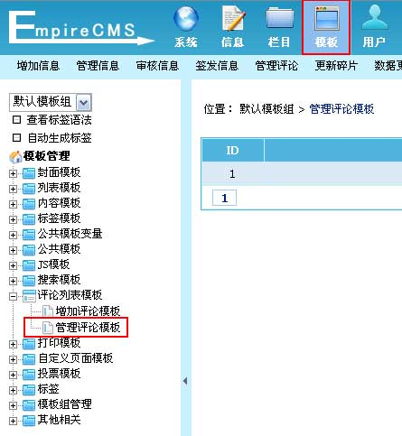
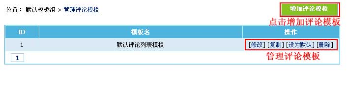
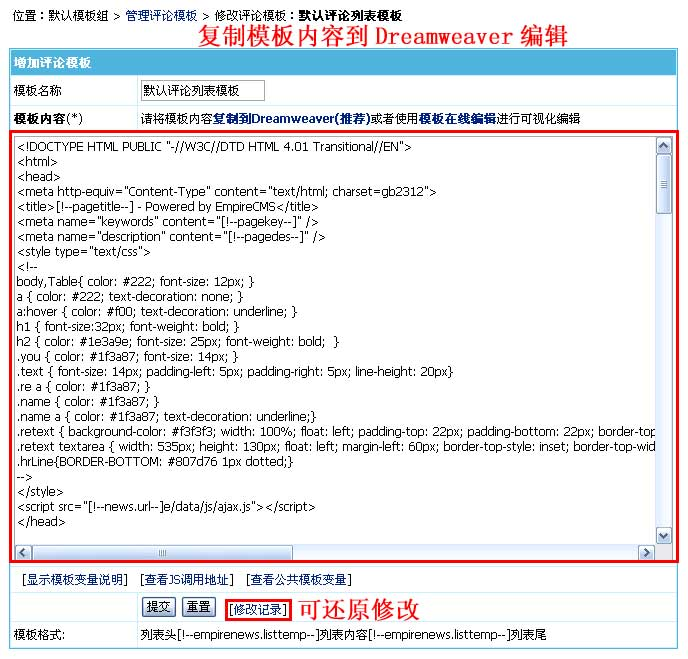
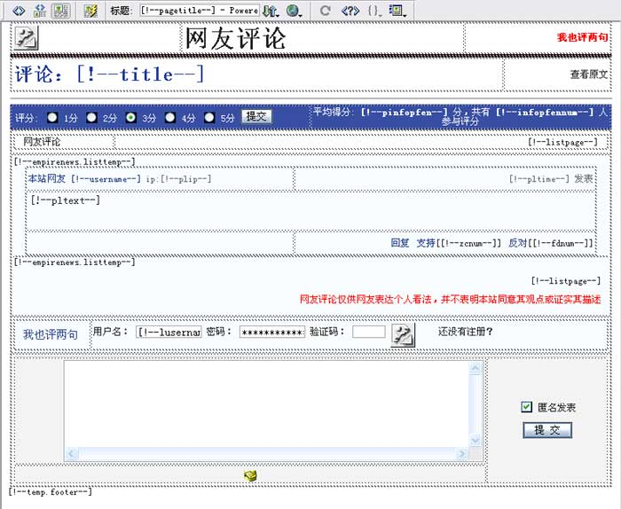
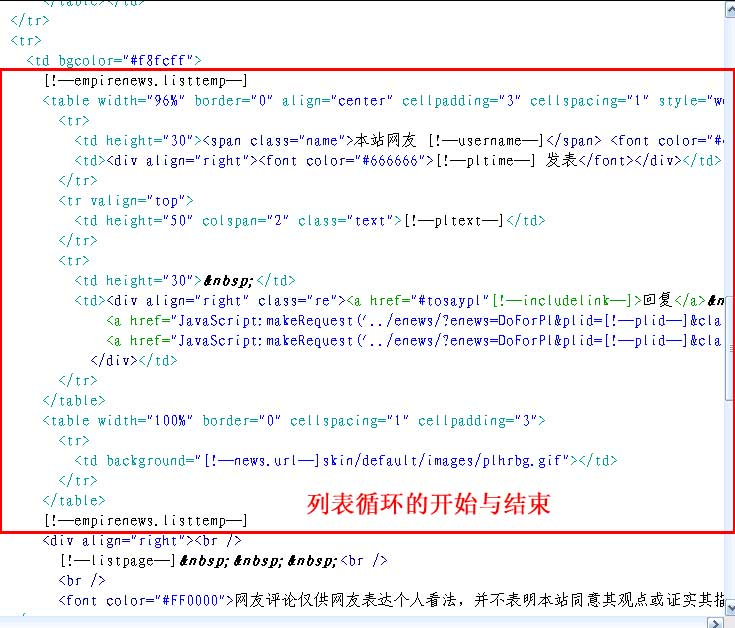

| 评论模板是指信息评论页面的模板，不同栏目可以设置不同的评论模板(/e/pl/)。 |
|
||
| 评论页面的调用 |
| 内容模板加评论页面链接：[!--news.url--]e/pl/?classid=[!--classid--]&id=[!--id--] |
| 指定使用评论模板的链接：[!--news.url--]e/pl/?classid=[!--classid--]&id=[!--id--]&tempid=评论模板ID |
| 评论列表制作格式 |
| 列表头 [!--empirenews.listtemp--] 列表内容 [!--empirenews.listtemp--] 列表尾 |
|
说明：第一个[!--empirenews.listtemp--]表示循环开始、第二个[!--empirenews.listtemp--]表示循环结束。 |
| 管理评论模板 | |||||||||||||||||||||||||||||||||||||||
| 1、登录后台，单击“模板”菜单，选择“管理评论模板”子菜单，进入管理评论模板界面： | |||||||||||||||||||||||||||||||||||||||
| 图片1：菜单导航  |
|||||||||||||||||||||||||||||||||||||||
| 2、进入管理评论模板界面：(蓝色背景为默认模板) | |||||||||||||||||||||||||||||||||||||||
|  | |||||||||||||||||||||||||||||||||||||||
| 3、点击“修改”进入修改评论模板界面： | |||||||||||||||||||||||||||||||||||||||
|  | |||||||||||||||||||||||||||||||||||||||
(1)、整体页面支持的变量
(2)、列表内容支持的变量
|
|||||||||||||||||||||||||||||||||||||||
| 4、把评论模板内容复制到Dreamweaver进行可视化编辑，如下图： | |||||||||||||||||||||||||||||||||||||||
| 图1：设计视图  图2： 代码模式  |
|||||||||||||||||||||||||||||||||||||||
| 5、修改评论模板后，复制页面的代码到后台的“评论模板内容”文本框，然后点击“修改”即可修改完毕。 |